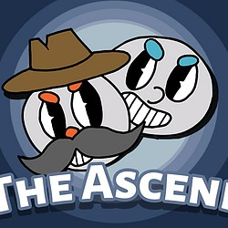
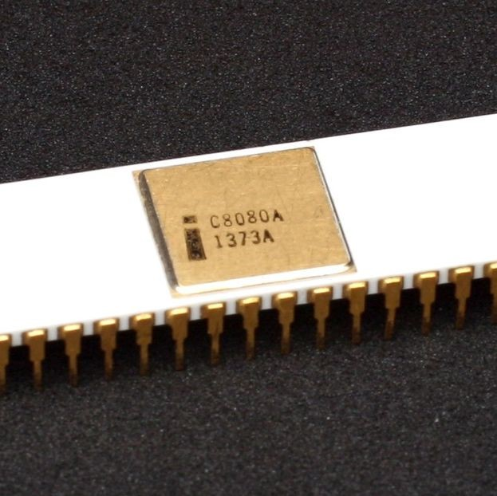
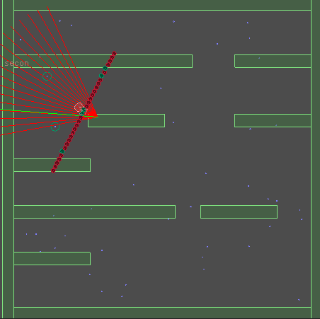
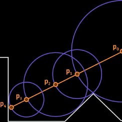
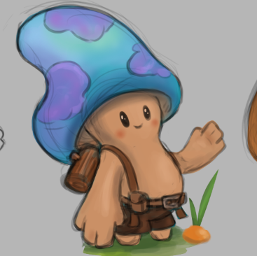
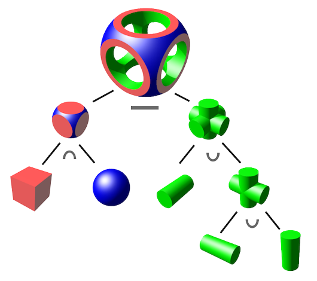
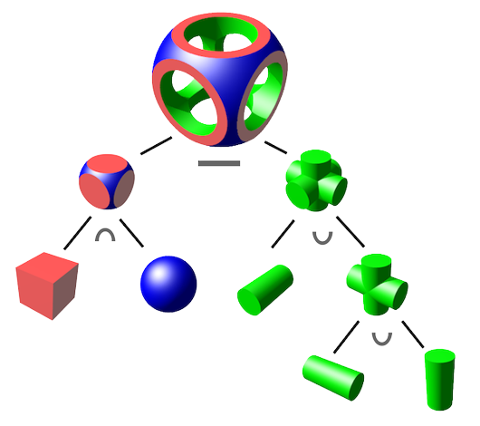

Portfolio work
The Ascend
The Ascend is a game project I worked on in a team, it was made in Unity and version controlled by perforce. The only requrement that we had was to make a local co-op game.
8080 emulator

A 8080 microprocessor emulator that can run classic space invaders and COM programs,
Fully written in C++ I mainly chose this emulator to learn more about emulator development and low-level programming.

Reinforcement Learning
This was a research project I did about reinforcement learning in 2D shooter games.

RayMarching
This is a small Unity project I made to experiment with compute shaders and ray marching.

Respect The Lawn

Under construction
A brand new game I'm working on with a lovely team, currently still in prototyping phase but soon enough
more about the game and development will be available here.


 
